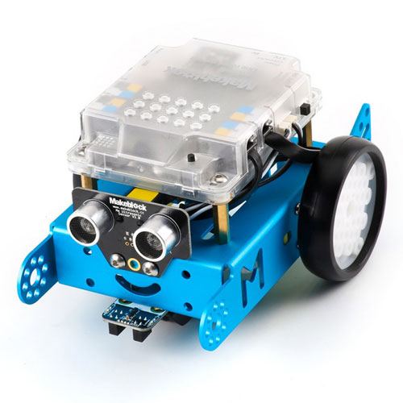
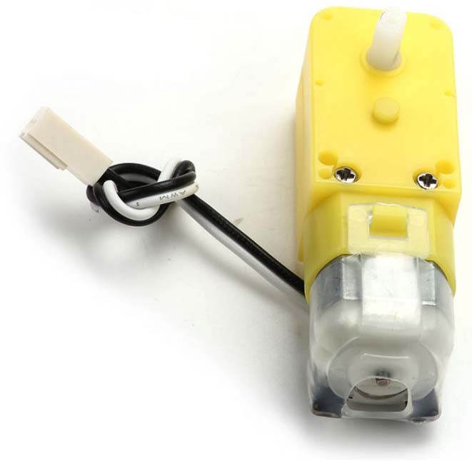
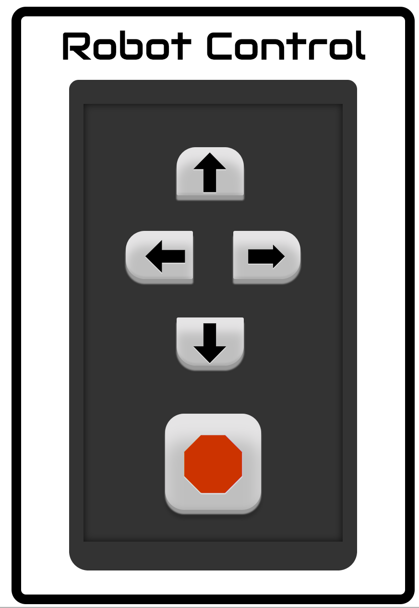

Robot Control
 The overall goal for this project was to create a robot that could control a basic robot. The Chasis and the motors that were used came from a mBot Kit by Makeblock. By using a tutorial from Hardware Fun on Controlling speed of DC motors using Arduino, I was able to understand how to change the direction of the motors. Once this was done, I was able to establish what values the pins should be set at so that the motors would be controlled separately and both turn in the desired direction, because if they were set to both turn left at the same time, one wheel would be turning forward, and one back, and the robot wouldn't move forward, as this was the first goal.
While being able to control the speed and direction of the DC motors was in the right direction, there was no way to control when the motors stopped or when they started. So the next step was adding a push button so that when the button was pressed, the motors would begin, and when the push button was released, they would stop. With the help of a tutorial from a blog that tracked a student's project, I was able to implement a push button and add to the code so that when the button was pressed, the motors would work and when released, the motors stopped. Once this was working, I added 3 more buttons, along with adding code, so that when the different buttons were pressed, the motors would begin turning in different directions according to the button that was pressed and held down. The 4 buttons caused the motors to go forward, backwards, and also the left motor would work own it's own when the 2nd or 3rd buttons were pressed, so the robot could turn left or right.
Now that the motors were running with pushbuttons, the next step was to remove the buttons and instead control the motors through buttons on a web interface. I found examples on how to go about doing so on Adafruit such as Build an ESP8266 Mobile Robot and WiFi Controlled Mobile Robot. By using those examples and a couple more, I was able to understand how to move from the pushbutton switches to using a web interface. For the time being, only one button would be used, as the first step was to make sure that the Robot can receive the information and start the motors. I did this by using the jQuery events mouseup and mousdown. Having the motors move when the mousedown event was called and then stop when the mouseup event was called. The data was sent to the text file when the mouse was down and then again when the mouse was up. I then changed the HTML and JS file so that there would be multiple controls on the interface and changed the JS file to use the click event, as this allowed, as that then allowed me to be able to continue to control the robot without having it stop between actions, and would only stop when I pressed the stop button of the interface.
Robot Control
Robot Control
button {
color: #000000;
width: 100px;
height: 100px;
border-radius: 100%;
-webkit-user-select: none;
-moz-user-select: none;
-ms-user-select: none;
user-select: none;
}
button:hover {
text-decoration: none;
color: #555;
}
.direction {
width: 70px;
height: 50px;
margin: 15px 7px 5px 0px;
padding: auto;
}
.leftright {
margin: 7px 18px 0px 18px;
padding: auto;
width: 70px;
height: 50px;
}
body {
font-family: 'Open Sans';
}
.buttonBlock {
margin: 25px;
}
.btn-block {
white-space: normal;
}
.btn-primary {
color: #000000;
border-radius: 20%;
text-decoration: none;
text-align: center;
background-color: hsl(0, 0%, 75%);
text-shadow: rgba(255, 255, 255, .5) 0 1px 0;
font-weight: bold;
-webkit-user-select: none;
-moz-user-select: none;
-ms-user-select: none;
user-select: none;
font-size: 50px;
box-shadow: inset rgba(255, 254, 255, 0.6) 0 0.3em .3em, inset rgba(0, 0, 0, 0.075) 0 -0.05em .015em, hsl(0, 0%, 60%) 0 .1em 1px, hsl(0, 0%, 45%) 0 .1em 1px, rgba(0, 0, 0, 0.2) 0 .1em 5px;
}
.btn-primary:before {
font: 1.2em/0 'Pictos', sans-serif;
content: attr(data-icon);
}
.btn-primary:hover {
background-color: hsl(0, 0%, 83%);
}
.btn-primary:focus {
outline: none;
color: #000 !important;
}
.btn-primary:active {
background-image: -webkit-gradient(radial, 50% 0, 100, 50% 0, 0, from( rgba(255, 255, 255, 0)), to( rgba(255, 255, 255, 0)));
background-image: -moz-gradient(radial, 50% 0, 100, 50% 0, 0, from( rgba(255, 255, 255, 0)), to( rgba(255, 255, 255, 0)));
background-image: gradient(radial, 50% 0, 100, 50% 0, 0, from( rgba(255, 255, 255, 0)), to( rgba(255, 255, 255, 0))), url(noise.png);
box-shadow: inset rgba(255, 255, 255, 0.6) 0 0.3em .3em, inset rgba(0, 0, 0, 0.2) 0 -0.1em .3em, rgba(0, 0, 0, 0.4) 0 .1em 1px !important;
-webkit-transform: translateY(.2em);
transform: translateY(.2em);
}
.btn-primary[disabled],
.btn-primary[disabled]:hover,
.btn-primary.disabled,
.btn-primary.disabled:hover {
opacity: .5;
cursor: default;
color: rgba(0, 0, 0, 0.2) !important;
text-shadow: none !important;
background-color: rgba(0, 0, 0, 0.05);
background-image: none;
border-top: none;
box-shadow: inset rgba(255, 254, 255, 0.4) 0 0.3em .3em, inset rgba(0, 0, 0, 0.1) 0 -0.1em .3em, rgba(0, 0, 0, 0.3) 0 .1em 1px, rgba(0, 0, 0, 0.2) 0 .2em 6px;
-webkit-transform: translateY(5px);
transform: translateY(5px);
}
.btn {
border: none;
font-weight: normal;
line-height: 1.4px;
-webkit-font-smoothing: subpixel-antialiased;
-webkit-transition: border .25s linear, color .25s linear, background-color .25s linear;
transition: border .25s linear, color .25s linear, background-color .25s linear;
}
.btn-primary.pink {
color: RGBA(204, 51, 0, 1);
text-shadow: rgba(255, 255, 255, .5) 0 1px 0;
font-size: 90px;
box-shadow: inset rgba(255, 254, 255, 0.6) 0 0.3em .3em, inset rgba(0, 0, 0, 0.075) 0 -0.02em .075em, hsl(0, 0%, 60%) 0 .05em 1px, hsl(0, 0%, 45%) 0 .01em .5px, rgba(0, 0, 0, 0.2) 0 .1em 5px !important;
}
.btn-primary.pink:active {
color: RGBA(204, 51, 0, 1);
background-image: -webkit-gradient(radial, 50% 0, 100, 50% 0, 0, from( rgba(255, 255, 255, 0)), to( rgba(255, 255, 255, 0)));
background-image: -moz-gradient(radial, 50% 0, 100, 50% 0, 0, from( rgba(255, 255, 255, 0)), to( rgba(255, 255, 255, 0)));
background-image: gradient(radial, 50% 0, 100, 50% 0, 0, from( rgba(255, 255, 255, 0)), to( rgba(255, 255, 255, 0))), url(noise.png);
box-shadow: inset rgba(255, 255, 255, 0.6) 0 0.3em .3em, inset rgba(0, 0, 0, 0.2) 0 0.02em .075em, rgba(0, 0, 0, 0.4) 0 .1em 1px !important;
-webkit-transform: translateY(.1em);
transform: translateY(.1em);
}
.btn-primary.pink:hover {
background-color: hsl(0, 0%, 83%);
color: RGBA(204, 51, 0, .95);
}
.btn-primary.pink:focus {
color: RGBA(204, 51, 0, 1) !important;
}
.btn-primary.pink[disabled],
.btn-primary.pink[disabled]:hover,
.btn-primary.pink.disabled,
.btn-primary.pink.disabled:hover {
color: RGBA(204, 51, 0, 1) !important;
}
body {
font-size: 20px;
}
.title {
text-align: center;
font-family: 'Audiowide', cursive;
font-size: 40px;
padding: 5px 0 10px 0;
}
.mainContainer {
width: 400px;
display: block;
margin-left: auto;
margin-right: auto;
text-align: center;
border: 10px solid black;
border-radius: 15px;
}
.remote {
width: 300px;
height: 500px;
background-color: #333;
border-radius: 10px 10px 20px 20px;
padding-top: 10px;
z-index: 100;
margin: auto auto 25px auto;
}
.remote .border {
height: 90%;
width: 90%;
margin: 15px auto;
box-shadow: inset 0px 0px 10px 1px rgba(13, 13, 13, 0.8);
position: relative;
padding-top: 5px;
}
.skewUP {
border-radius: 20px 20px 2px 2px;
padding-top: 10px;
padding-bottom: 10px;
}
.skewDown {
border-radius: 2px 2px 20px 20px;
margin-bottom: 25px;
padding-top: 10px;
padding-bottom: 10px;
}
.skewRight {
border-radius: 2px 20px 20px 2px;
}
.skewLeft {
border-radius: 20px 2px 2px 20px;
}
$(document).ready(function () {
$('#1').click(function() {
js2php("1");
});
$('#2').click(function() {
js2php("2");
});
$('#3').click(function() {
js2php("3");
});
$('#4').click(function() {
js2php("4");
});
$('#5').click(function() {
js2php("0");
});
});
function js2php(qData) {
var xmlhttp = new XMLHttpRequest();
xmlhttp.open("GET", "main.php?q=" + qData, true);
xmlhttp.send();
console.log(qData);
}
import processing.serial.*;
Serial ComPort;
String input[];
int last = 1;
int current= 1;
void setup() {
String portName = Serial.list()[1];
ComPort = new Serial(this, portName, 9600);
println(ComPort);
ComPort.bufferUntil('\n');
}
void draw() {
input = loadStrings("http://acowancreations.com/iotremote/bot.txt");
current = int(input[0]);
println(current);
if (current != last) {
println("current: " + current);
println("last: " + last);
println("- - -");
ComPort.write(current);
last = current;
}
//input = null;
delay(500);
}
const int E1 = 10;
const int E2 = 11;
const int motor1pin1 = 8;
const int motor1pin2 = 9;
const int motor2pin1 = 12;
const int motor2pin2 = 13;
int moveRobot = 0;
void setup() {
Serial.begin(9600);
Serial.println("read");
pinMode(E1, OUTPUT);
pinMode(E2, OUTPUT);
pinMode(motor1pin1, OUTPUT);
pinMode(motor1pin2, OUTPUT);
pinMode(motor2pin1, OUTPUT);
pinMode(motor2pin2, OUTPUT);
digitalWrite(switchState, moveRobot);
}
void loop() {
if (Serial.available()) {
int moveRobot = Serial.read();
if (moveRobot == 0) {
stopp();
}
else if (moveRobot == 1) {
forward();
}
else if (moveRobot == 2) {
left();
}
else if (moveRobot == 3) {
right();
}
else if (moveRobot == 4) {
back();
}
}
}
void forward() {
digitalWrite(E1, HIGH);
digitalWrite(E2, HIGH);
digitalWrite(motor1pin1, HIGH);
digitalWrite(motor1pin2, LOW);
digitalWrite(motor2pin1, LOW);
digitalWrite(motor2pin2, HIGH);
}
void left() {
digitalWrite(E1, LOW);
digitalWrite(E2, HIGH);
digitalWrite(motor1pin1, LOW);
digitalWrite(motor1pin2, LOW);
digitalWrite(motor2pin1, HIGH);
digitalWrite(motor2pin2, LOW);
}
void right() {
digitalWrite(E1, LOW);
digitalWrite(E2, HIGH);
digitalWrite(motor1pin1, HIGH);
digitalWrite(motor1pin2, LOW);
digitalWrite(motor2pin1, LOW);
digitalWrite(motor2pin2, HIGH);
}
void back() {
digitalWrite(E1, HIGH);
digitalWrite(E2, HIGH);
digitalWrite(motor1pin1, LOW);
digitalWrite(motor1pin2, HIGH);
digitalWrite(motor2pin1, HIGH);
digitalWrite(motor2pin2, LOW);
}
void stopp() {
digitalWrite(E1, LOW);
digitalWrite(E2, LOW);
digitalWrite(motor1pin1, LOW);
digitalWrite(motor1pin2, LOW);
digitalWrite(motor2pin1, LOW);
digitalWrite(motor2pin2, LOW);
}